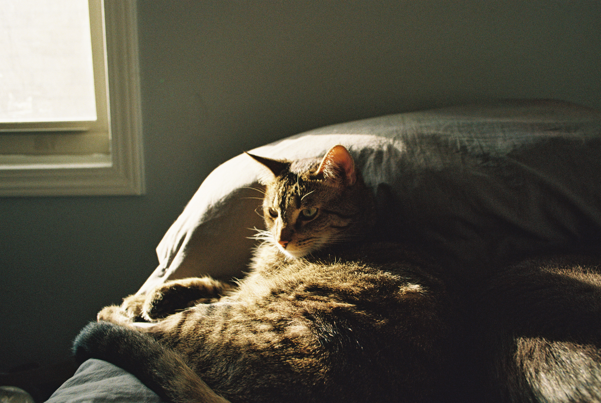
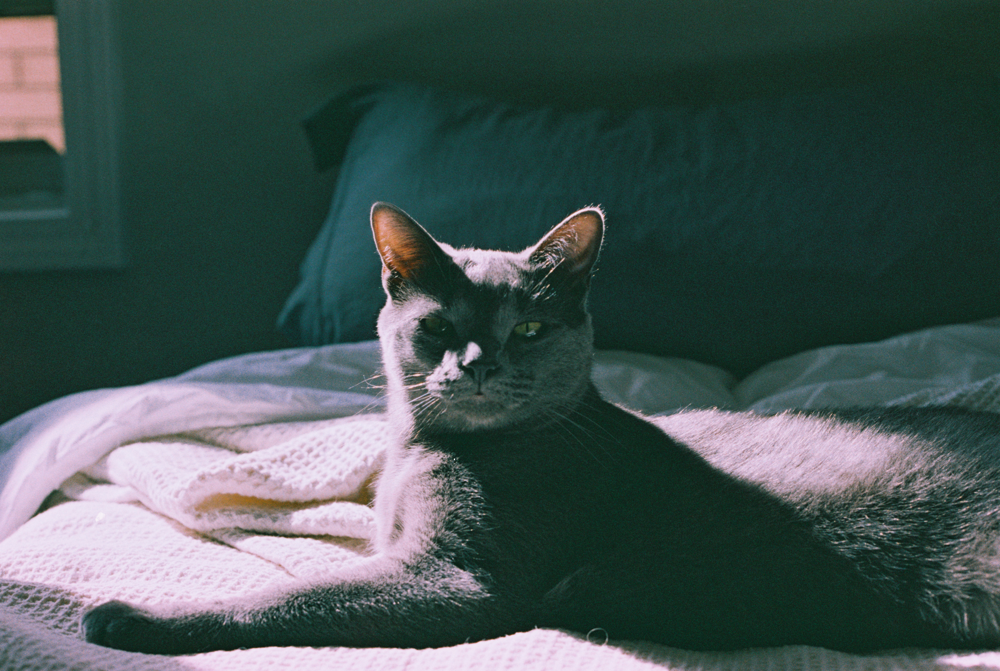
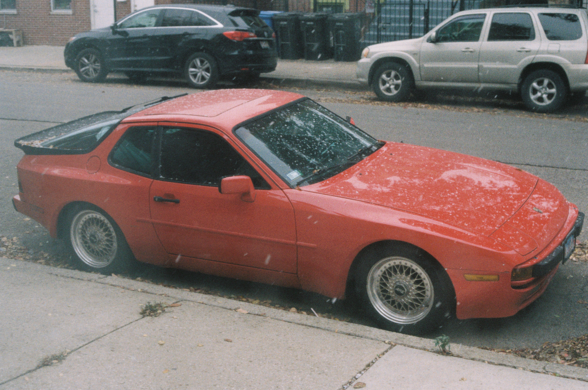

Hello! Welcome to my page. I am a fourth year ITM undergraduate student. I was born in Chicago and have been living here for all of my life. Some of the things I like to do in my free time is spend time with my two cats. My eldest cat is named Robot and his younger counterpart is named Pi. Robot used to be my older brothers cat but he ended up liking me more so he became my cat. My mother got Pi for me as a Christmas gift.
 In my free time I have recently been playing a game called Elden Ring. I don't usually play a lot of games but many of my friends and coworkers asked me to give the game a shot. At first I did not like it but with more time I ended up really enjoying the game. When I am not playing this game I like to hang out with friends and get the chance to use my film camera. I am a beginner film photographer and have much to learn. I currently have a Canon AE-1 Program. It has been very fun learning and experimenting with all of the different settings available. I prefer the film medium over digital because I feel that it gives me a good starting point to learn about the many things surrounding photography. I also like the excitment of not really knowing the results untill after the pictures have been developed.
Over the summer one of the biggest things I did with my time was work on my car with my older brother. The car is a 1983 Porsche 944. It has been both a major headache as well as one of the most fun experiences I have had. We have been working on it for a little over a year. I have learned so much from working on it and replacing what are likley 40 year old parts. There are times where I think of throwing in the towel and selling but in those moments where the car is running, I end up forgetting about all of the trouble it has given me. My favorite parts about the car is that it has a manual transmission which is incredibly fun and engaging when there is no traffic. I also really like the design of the car. I feel like as of recently design in the automotive industry is rarley exciting. When I see the car I think it looks very distinct ands overall nice to look at.
Most of my web experience comes from my time learning throughout the ITM program. I became interested in web developement when I was in Highschool. My older brother used to do a lot of web dev stuff for school and work and watching him work became really interesting to me. One major difference between him and I is that he generally uses frameworks as it is usually more efficient for his workflow. However, since I am still learning, I create my pages from scratch. This has been very helpful in understanding the fundamentals of web developement. One of my favorite projects was in my ITMD-362 class. We were challenged with making a form that a user would actually want to engage with. I think it came out incredibly well and was a really exciting and interesting form. I particularly liked how the mobile design of that page turned out. That assignment got me to think a lot about the user experience and how people generally interact with intangible things like webpages. This is something that also really interests me because user experience is one of, if not the most important parts of web experiences.
Here is the link to that page: Form Example
Phone Number: 312-XXX-XXX
Email: amedina12@hawk.iit.edu
Linkedin: www.linkedin.com/in/amedina004
Analytical Bachelor of Information Technology and Management student pursuing a specialization in information systems and systems security. Currently seeking valuable opportunities within organizations leveraging proficiency in a range of technical and critical power skills to improve data security and optimize information systems.
Costco Wholesale | Front End Assistant | Jul 2022 - Present
Request for Proposal | Apr 2023
Constructing a Database | Nov 2022
Society of Hispanic Professional Engineers | Aug 2023 - Present
Association for Computing and Machinery | Aug 2023 - Present
Speak Conversation group